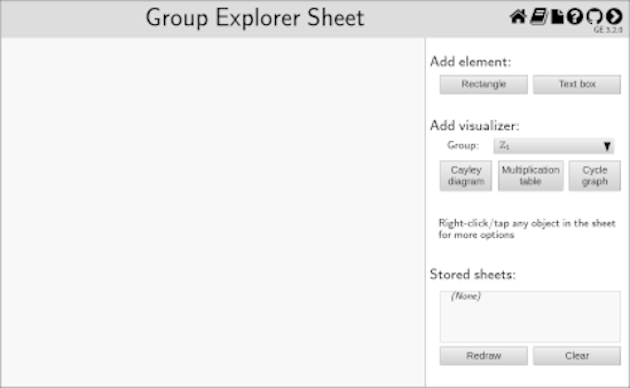
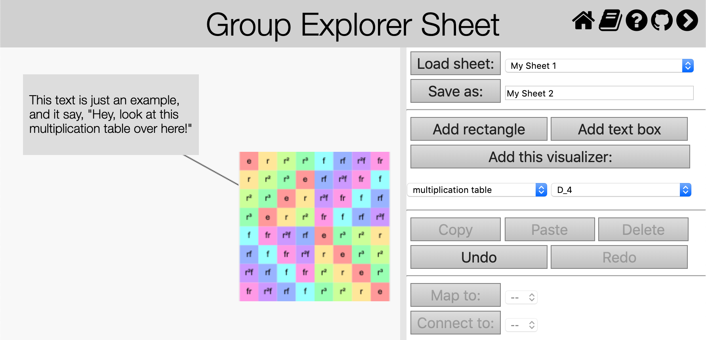

This page describes how to interact with sheets in Group Explorer. If you are unsure what sheets are, read the description here. A blank sheet window looks something like the following picture.

Let us consider all the things one can do with a sheet, grouping them categorically.
A blank sheet is shown as a white region, the left side of the window pictured above. In this region you can add various kinds of “sheet items.” Here is an image of a window containing a sheet with four items: a multiplication table, some text, a gray background rectangle, and a connecting line.

If you wish to experiment with a sheet without creating one, there are links in each group’s Group Info page that will create sheets for you (e.g. “Show me all the views connected together in a sheet” link in the Views section).
Note that resizing the window containing the sheet does not resize the sheet. By default, all sheets are a fairly large size, so that you should not need to make them larger. You can scroll around within the view to see new regions of the sheet as needed, using your mouse wheel.
When you click an item on the sheet, a dotted line border appears around it to indicate that you have selected it.
Note that for nonrectangular items (lines and homomorphisms) the area of their sensitivity to the mouse may be fairly large, to give you ample opportunity to click them without having to click exactly on a line.
To move an item from one place to another on the sheet, simply click and drag it. To move an item forward or backwards on the sheet (i.e. farther into the background, or closer to the foreground), use one of the four buttons for this purpose in the right-hand pane, “Move forward,” “Move to front,” “Move backward”, and “Move to back.”
You can resize an item by first selecting it, and then hovering your mouse over any part of its boundary. Your mouse cursor will shape itself like a pair of arrows to indicate that resizing is possible. Click and drag to resize the item.
The following commands appear in the right-hand pane of the sheet window.
Enter a name for your sheet and click the “Save as:” button to save the sheet into your browser’s memory. This will persist even when you are not on the Group Explorer website, or indeed even when your computer is off. (It uses your browser’s “local storage.”)
To load a sheet you’ve saved in the past, choose its name from the drop-down menu next to the “Load sheet:” button and then click the button. Any work you had on the left of the window will be immediately overwritten by loading the saved sheet.
Click this button to add a solid, gray rectangle to the sheet. You can, of course, move and resize the rectangle after it has been placed, including move it forward or backwards in the sheet, as described above.
Rectangles are useful for visually grouping items on the sheet by placing the rectangle behind them. They serve only a visual purpose.
As with all items on a sheet, double-click the rectangle to edit its properties. In the case of the rectangle, this includes only its background color.
Click this button to add a small text box to the sheet containing just the word “Text.” You can, of course, move the text after it has been placed, including move it forward or backwards in the sheet, as described above.
Text can be useful for labeling items on the sheet, such as with a caption or explanation.
As with all items on a sheet, double-click the text to edit its properties. In the case of text, this includes the text itself, its font size, its alignment, and its color.
Before clicking this button, choose from the controls beneath it which kind of visualizer you would like to add.
After making these choices and clicking the “Add this visualizer:” button, a copy of the visualizer you chose will appear at the top left of the sheet. As with all sheet items, you can move and resize it as needed thereafter.
When you double-click a visualizer to edit its properties, rather than presenting you a small dialog (as with, say, rectangles or text boxes), Group Explorer opens a new tab in your browser with a large view of the visualizer. Changes you make in that large view (such as highlighting elements or changing the viewpoint on a three-dimensional diagram) will be reflected immediately in the sheet. You can close that visualizer tab at any time; changes you make there are always synced to the sheet.
Click this button to copy the selected item on the sheet. You can then use the paste button to create another instance of the same item immediately on top of the first one. Then move it to the location you desire.
This removes the selected item from the sheet. The only way to get it back is to use Undo.
Note that if you delete an item that is connected to another item via a connecting line or morphism, the connection(s) will also be deleted.
If you make a change to a sheet that you’d then like to undo, click the Undo button. As in many applications, you can click Undo multiple times, and move forward through your changes again with Redo.
To connect one item in a sheet with another by a straight line, follow this procedure.
You can always delete a connection later by selecting the connection itself and clicking the Delete button documented above.
Connections are useful for attaching labels to items in a complex sheet, or showing an intricate network of connections as in a lattice of subgroups.
To connect one visualizer in a sheet with another by a homomorphism, follow this procedure.
Homomorphisms are automatically given names by Group Explorer when you insert them (starting with and , the most common names). You can edit the properties of the homomorphism by double-clicking the morphism itself. By default, all homomorphisms map their entire domain to the identity element of the codomain (the zero homomorphism). To see how to change this, visit the help page on editing homomorphisms.